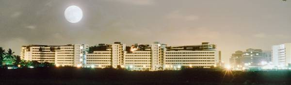
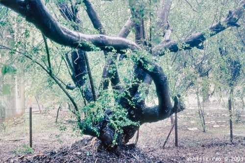
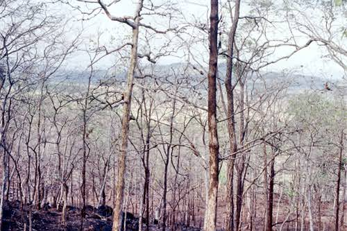
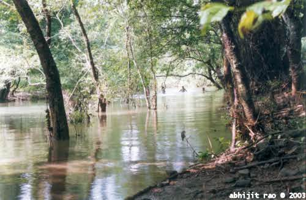
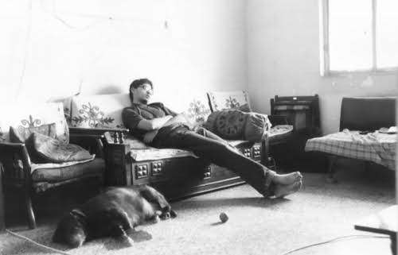
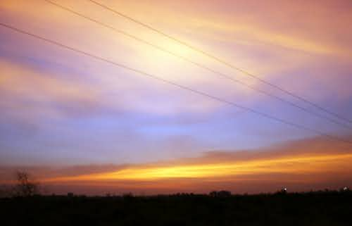
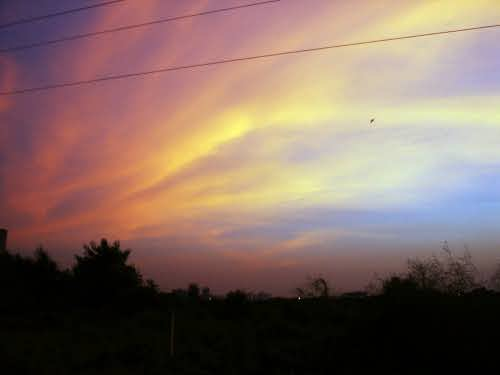
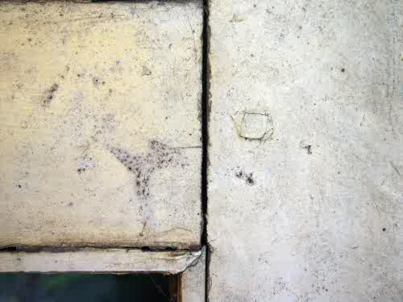

one rainy evening

bandra kurla complex

a complex tree

dry forest at takmak

Clouds on Matheran

Wet grass at Kanheri

Fun in the water

High Plateau Panhalgad

Lazy Late Afternoon

sunset in october

sunset in october II

corner of a window frame